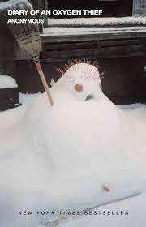

Last weekend, I took a trip to Sebago Lake in Maine with my closest friend and her family--something we do most weekends in the summer. We stayed in her guest house, which overlooks the lake, spent our mornings at our favorite coffee shop, and spent the afternoons studying or working side by side. In the evenings, we joined her family for dinner before heading into Portland to explore the city. Although, this weekend was a little different than most because I hurt my elbow.
I'm not sure if an establishment needs chairs or even an indoor section to qualify as a restaurant, but right now my favorite spot is Scoop N Scootery. I usually go to the Cambridge location since it is right next to my work. Their ice cream sundaes are incredible--my current top pics are That Thicc Boi, Granddaddy, and Demogorgon.
The aforementioned Scoop N Scootery specialty dish, That Thicc Boi, is intended to be consumed cold with a spoon.
| Book Title | Cover | Author | Summary |
|---|---|---|---|
| The Art of Racing in the Rain | Garth Stein | A dog's-eye view of life, loyalty, and racing--this story of a dog and his owner, a race car driver, hits you right in the heart, and somehow makes you cry and smile at the same time. | |
| The Diary of an Oxygen Thief |  | Anonymous | A raw, unfiltered, and sometimes uncomfortable deep dive into emotional damage and the games people play. |
| Unmasked: My Life Solving America's Cold Cases | |
Paul Holes | Part memoir, part true crime deep-dive--this book offers a behind-the-scenes account from the detective who cracked some of America's most chilling cases, including the Golden State Killer. |
| I'm Thinking of Ending Things | Iain Reid | A psychological thriller that tells of a surreal and unsettling road trip where the line between thought and reality blurs, building toward a haunting twist. |